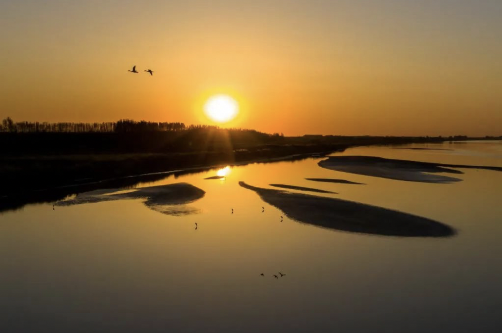
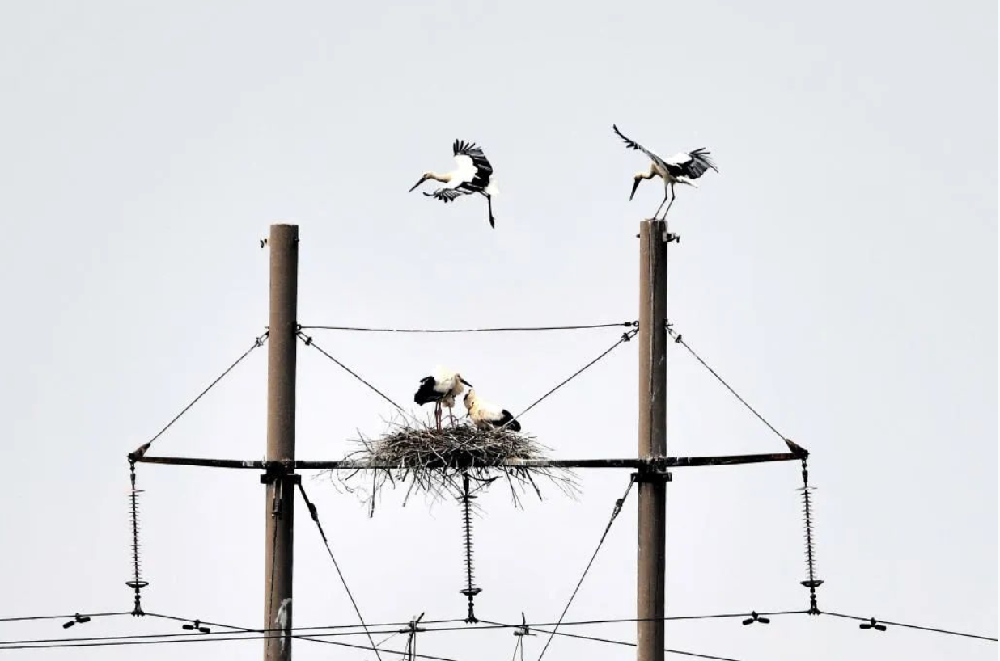

黄河流域生态保护和高质量发展｜风清柳绿胜景现——山东书写黄河下游生态保护新篇
发布时间: 2023-09-17 4281 次浏览
-
水鸟在黄河下游山东高青段休憩、飞舞。新华社发（张维堂 摄） 初秋时节，山东济南槐荫黄河大堤沿线在各种林木的装点下，绿意尽显。骑上一辆共享单车，沿堤坝道路穿梭，畅享黄河之美，成为很多市民的时尚运动。 “近些年，黄河真是一年一个样儿。过去一起大风就尘土飞扬的日子一去不复返了。”从小在黄河边上长大的市民王先生，望着眼前奔流向东的河水，由衷感慨道。 纤纤不绝林薄成，涓涓不止江河生。防浪林、行道林、适生林交织绵延的生态长廊，构成黄河下游的绿色基底。“多年间，我们大力实施黄河堤防绿化美化，树株存有量达到3500万株，绿化面积超21万亩。”黄委山东黄河河务局水调处副处长彭程说。 黄河奔流，生生不息，哺育中华民族，孕育华夏文明。
中华儿女在感恩母亲河的同时，也为实现“黄河宁”而努力。 在淄博高青县，黄河入海前，拐出了一道弯，被当地民众叫作“安澜湾”，如今这里风景秀丽，湿地连片，白鹭成群。眼前的美景让人很难想象，若干年前的“安澜湾”是一片盐碱涝洼地，缺少植被保护，沙土漫天。 为加快推进污染综合治理，优化沿黄生态空间布局，当地启动天鹅湖慢城湿地生态保护和修复项目，短短几年间实现了黄河外滩盐碱涝洼地的生态修复。现已恢复湿地200万平方米，形成绿化面积190万平方米，拥有树木80余种、2万余株，绿化率超过80%。 生态环境的质变，吸引大量鸟类驻足。当地摄影爱好者张立国近些年得偿所愿，用镜头记录下一批批返回高青过冬的天鹅。当记者问拍到天鹅时的心情时，他的爱人抢着说：“老张开心得像个孩子。” 山东强化系统治理，统筹沿黄重点区域生态治理，在全国率先实现县际流域横向生态补偿全覆盖，全省特别是黄河流域主要环境指标连创有监测记录以来最优水平。2022年，黄河干流山东段连续7年实现国控断面Ⅱ类水体比例100%，黄河流域国控断面优良水体比例首次达到100%。 在黄河入海口城市东营，“生态警长”杨华章每天上班后的第一件事，就是通过指挥大厅13块屏幕和252个监控探头画面，对477平方公里的辖区进行远程巡查。
“国家一级保护动物东方白鹳是我们的‘市鸟’，在保护区里就有2000多只。它们一般在高处筑巢，为此保护区建设了一批‘人工鸟巢’，配备了高点监控。看着它们平安成长，我们很安心，苦点累点也没啥。”杨华章说。多年来，他们在巡逻、办案中发现、救助各类禽鸟数万只。 湿地茫茫，芦荻苍苍。鹳鹤伴舞，鸥鹭集翔。民警们看惯了黄河落日、北雁南飞，也见证了黄河三角洲的生态环境、治安状况变得越来越好。 生物多样性是人类赖以生存和发展的基础。
山东加强保护地管理，维护栖息地完整，黄河三角洲国家级自然保护区鸟类从1992年建区时的187种增加到373种，越来越多的鸟儿在此安家落户。 沿着黄河走访，自然景色流转入目的同时，交相呼应的人文景观同样焕发光彩。滨州滨城区，黄河从黄河楼脚下穿过。碧水蓝天中，葳蕤苍翠的蒲湖湿地与气势恢宏的人文胜景融为一体，向民众展示生生不息的文化魅力。 走进黄河楼，楼内设有全景黄河、溯源黄河、安澜黄河等主题展览，将黄河治理历史、沿线风光、黄河流域生态保护和高质量发展重大国家战略等融入其中。“我们注重黄河文化的创造性转化、创新性发展，设置了非遗、手造体验等活动，开发了30多种文创产品，让游客在游览黄河楼之际，触摸黄河文化、领略黄河魅力。”黄河楼景区负责人王翠芹说。
黄河文化旅游宣传平台
联系电话: 17753010787
版权所有：山东大学技术团队
技术支持：山东大学技术团队